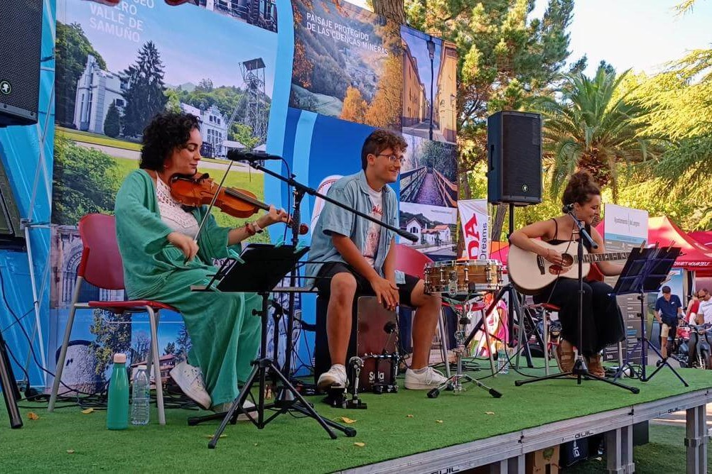

MULTIMEDIA
Conciertos


Casa de encuentros Santa Inés, Sotrondio
7 de marzo a las 19:00
Ayuntamiento SMRA, Sotrondio
8 de marzo a las 12:00
Bulevar El Vasco, Oviedo
12 de marzo a las 12:30
La Felguera
16 de marzo a las 12:30
28 de julio
13 de octubre
Tenemos un amplio repertorio de más de 200 temas para amenizar en restaurantes, cafeterías, bodas y otros tipos de eventos. Por supuesto, siempre estamos encantados de aceptar nuevas propuestas.
La 402 se creó a finales de 2018 para participar en un acto en Sobrescobio contra la violencia machista. Meses después, en febrero de 2019, se le dio el nombre actual a la agrupación por el número de la cabina donde se ensayó por primera vez. Desde entonces, pasando por actuaciones de diversa índole, se han ido cultivando nuevas versiones musicales con un estilo cada vez más propio, caracterizado por el uso de violín, cajón, percusiones, guitarra y voces, con estilos que van desde un pop/rock más comercial hasta músicas más independientes, siempre con un toque acústico folk.
Natural de La Felguera, comencé mi andadura musical a los 6 años, en agrupaciones corales. Más tarde, estudié los
grados elemental y profesional de Violín en el Conservatorio Valle del Nalón.
Mi formación artística ha pasado también por diversos cursos de teatro, clases de ballet clásico o participación en
talleres de muy diversa índole.
Participo en agrupaciones como la Orquesta Langreana de Plectro, la Orquesta de la Universidad de Oviedo o la Orquesta
de Cámara de Siero. También formo parte desde 2011 en el Proyecto Voces Blancas del Nalón, y desde 2020, soy la directora coral.
Actualmente estoy realizando el grado profesional de piano en el Conservatorio Valle del Nalón y trabajando como profesora
de Música y Movimiento y de orquesta y coro en la Escuela de Música Itinerante de Siero.
Fuera del ámbito musical, soy estudiante del grado en Filosofía en la Universidad de Oviedo y también monitora de ocio y
tiempo libre.
Mi formación musical empezó a los 9 años cuando decidí comenzar mis estudios en el conservatorio del Valle del Nalón
en la especialidad de guitarra. Allí estudié durante 10 años, primero el grado elemental y después el profesional,
al mismo tiempo que formaba parte del Coro de Voces Blancas.
Con esta agrupación participé en concursos y conciertos tanto nacionales como internacionales, en espacios como
Notre Dame (París) o San Patricio (NY).
Actualmente soy estudiante de 4º de Filología Española con mínor en asturiano, por lo que suelo encargarme de las cuestiones
lingüísticas del grupo. Como os imaginaréis, también disfruto mucho de la música en asturiano, y recientemente he
colaborado con "Playpresta" en su canal de Youtube versionando algunas de mis canciones favoritas.
Empecé mi trayectoria musical en la Escuela de Música del Principado de Asturias, en la especialidad de guitarra. Sin embargo,
al acabar los 4 años del grado elemental, me apunté sin dudarlo a percusión. En 2021 acabé el grado profesional en el Conservatorio
de música Oviedo, obteniendo el premio de fin de grado en mi especialidad.
Actualmente estoy realizando los estudios de percusión en el CONSMUPA y trabajando como profesor de percusión en
la Escuela de Música Divertimento.
También participo en ocasiones con el Coro Voces Blancas del Nalón, la Orquesta Langreana de Plectro, la Orquesta de Cámara de Siero y
la Charanga L'Estruendo.
He colaborado con agrupaciones musicales como la Banda Sinfónica del Ateneo Musical de Mieres, la Banda Sinfónica de Gijón, la
Banda Sinfónica de Avilés y la Charanga Paentamala.
Al margen de mi carrera musical, soy Técnico Superior de Desarrollo de Aplicaciones Web.